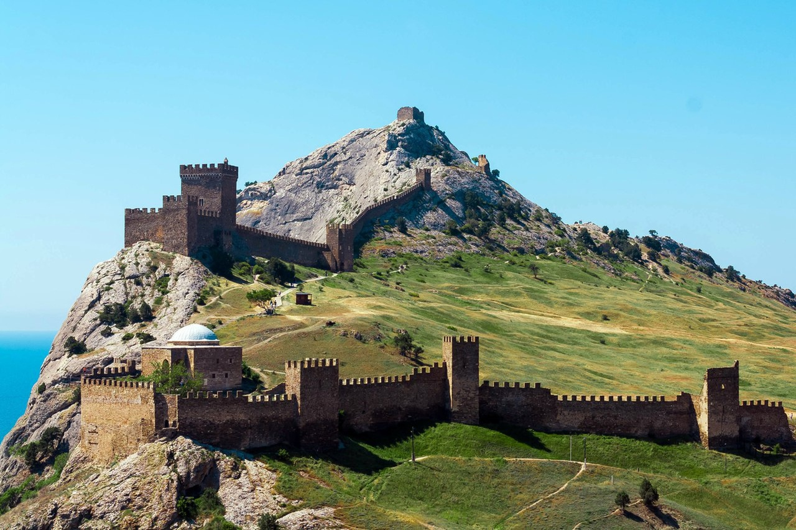

Генуэзская крепость Судака представляет интерес как многовековой памятник культуры. Современное название города Судак ближе всего к восточным формам. Изначальный топоним восходит к слову «сугда», что с древнеиранского означает «чистый», «святой». Доподлинно неизвестно, когда была построена Генуэзская крепость в Судаке и кто ее построил. Некоторые считают, что крепость Сугдея появилась в 212 году — здесь размещались воины Боспорского царства. Однако от этой эпохи были найдены лишь небольшие фрагменты сооружений и монеты. Исследования показали, что история Судакской крепости отсылает к VII веку. До появления генуэзцев здесь был византийский город Сугдея, защищенный оборонительными сооружениями. Именно после этого открытия получило распространение название «Судакская крепость», а не «Генуэзская крепость Судака». За всю свою историю Судакская крепость Крыма принадлежала разным народам: грекам, туркам, монголам, венецианцам, генуэзцам, находилась под протекторатом половцев. XIII век стал для Генуи периодом расцвета. С 60-х годов в Причерноморье стало появляться все больше генуэзских факторий (торговые представительства), а вслед за ними вырастали и города. В 1475 году, в период ослабления Византии и усиления Османской империи, крымские генуэзские крепости отошли туркам. Затем, в XVIII веке Судак был взят российскими войсками. Для строительства гарнизонных казарм были разрушены некоторые исторические постройки. |
 |